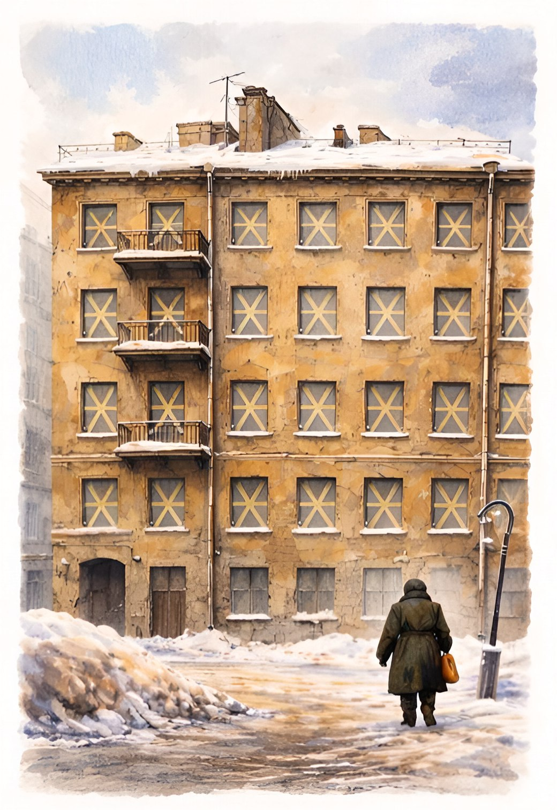

Перед вами дом в блокадном Ленинграде.
Окна дома заклеены крест-накрест, чтобы снизить воздействие ударной волны на стекло.
За каждым окном — память.
Приглашаем вас открыть истории этого дома!
Начните со входа в парадную.
Поднимайтесь по этажам — шаг за шагом.
Коснитесь окна — и позвольте памяти заговорить.
Эти истории записаны в ходе интервью с очевидцами событий, жителями блокадного города и их близкими.
Некоторые окна пока молчат. Но они обязательно откроются — и воспоминания оживут.